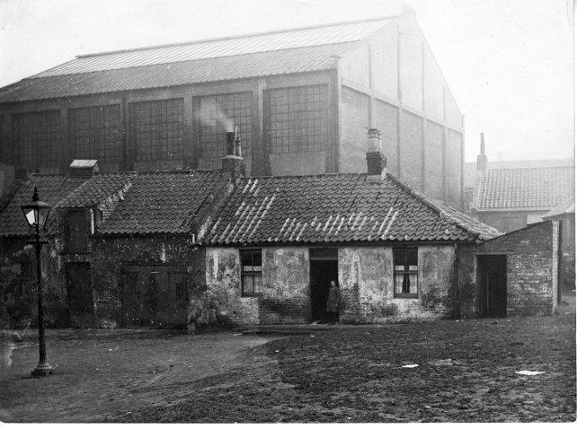
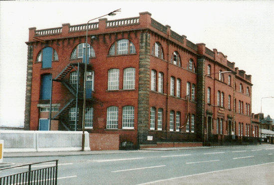

Portobello Heritage - Architecture
Georgian Houses
The Architectural Development of Portobello in the early 19th Century

This article concentrates on the period from 1770 to 1840 and examines some social and historical developments that explain how Portobello came to be developed in the way it was. Knowing who cam tostay in Portobello, and why and when, helps towards an understanding of why certain types of houses came to be built. Original street names are used throughout but some Edinburgh streets were renamed in the 1960s and Tower Street became Figgate Street; Wellington Street is now Marlborough Street; Melville Street was renamed Bellfield Street and Pitt Street was changed very slightly to Pittville Street.

Waverley Cottage, Regent Street
The first housing to be built in Portobello followed upon William Jameson's commercial development of clay deposits found in the 1760's near the Figgate Burn. The establishment of brick and tile works was soon followed by other industries such as soap works, a flax mill, several potteries, a glass works and a white lead works. Housing for the workers involved in such industries soon came to be built and wereconcentrated largely in three areas; round the Figgate Burn itself; near Wilson's Park and near the former Windsor Place church as there was a clay pit on the site of what was later to become Mount Lodge. Such housing was probably simply and crudely built, in single storey brick with a pantiled roof, similar to that in Rosebank Square (pictured above), demolished in the mid-1930s to make way for the Open Air Swimming Pool and in Berry Square, off Tower Street, which survived until the 1970's. Surviving small scale "working - class" housing in Portobello is much later, e.g. Thomas Tough's Adelphi Place development of the 1860's, built to house his pottery workers.The next type of housing to be built was of a very different nature. In 1767 William Jameson built as his summer residence, Rosefield House, near what was later to become Adelphi Place. Soon, other villas followed. Ramsey Lodge, Mount Charles and Shrub Mount, later the home of Hugh Miller, were built between 1770 and 1780. In the 1790's Jessfield, demolished to build the present library, Rosefield Cottage now Rosefield Park and Williamfield were built. Of these, only Shrub Mount, now much altered, survives.These villas were simple two storey houses, often set amid large orchards and accessible off lanes, as no streets existed at that time. The Tower, erected about 1785 remains, built not as a house as such, but as a summer house at the bottom of the garden of Shrub Mount, whose policies stretched from the High Street to the sea.There were three small farms in Portobello at that time. These were Portobello Park, later Park House, off Wellington Street, Rabbit Ha', demolished to build the parish church in Melville Street, and Middlefield which later formed the Brighton Park area.Scotland Delineated, published in 1799, describes Portobello as, "A rising village of about; 300 inhabitants employed in the manufacture of bricks, tiles, jars, brown pottery and white stoneware”. As yet, there is no reference to Portobello as a watering place. However, in 1795, one John Cairns was advertising in an Edinburgh newspaper that he would provide bathing machines at Portobello. Until then Leith had been where Edinburgh people went to bathe but commercial and industrial expansion there prompted the growth of Portobello as a place to come and bathe and to live during the summer. Indeed, it could be argued that Portobello is Scotland's only planned Regency Spa.

Pittville House, Pittville Street
Between 1800 and 1825, much of Portobello was laid out as we see it today, on roughly a grid plan, mainly between the High Street and the sea and progressing from west to east. Many of the houses were built as speculative ventures, either to sell, or to rent out either for the summer season or for the year. Attitudes towards property owning were different then and many comfortably well-off families were content to rent the house they lived in on an annual basis.These streets were laid out and built in distinct phases. Bath Street and Tower Street were laid out in 1801/1802, the houses mainly being built between 1805 and 1825. The loss in the 1970s, of Tower Street is to be particularly regretted. Consisting mainly of detached and semi-detached two-storey brick houses,elegantly detailed, some with rich internal plasterwork, it was a street which could and should have been saved. It is ironical that, while supplying much of the brick to construct the interiors of the New Town, Portobello now has few brick built houses surviving. Numbers 207 to 211 Portobello High Street, opposite Regent Street, are the main exceptions.Regent Street and Wellington Street were laid out around 1815 - 1816 by the builder Lewis Wallace who was involved in building much of the Edinburgh New Town, including parts of Drummond Place and Heriot Row, to the designs of architects like Robert Reid.The next phase included the building of Melville Street, Pitt Street and John Street. These were laid out by the architect Robert Brown, who himself lived in Pitt Street. Robert Brown was an architect of considerable distinction, designing much of the New Town, including Melville Street, St. Stephen's Street, and Manor Place. He also designed what is now the Queen's Hall in South Clerk Street. The development and building of the Brighton / Rosefield area, around 1823, by the architect John Baxter, was the next major phase of building. Baxter provided not just the plans for these streets, but also the elevations for the buildings themselves. Thus this area is one of the most attractive in Portobello, the uniform facades with their linking screen walls giving these streets a distinction lacking in most other Portobello streets. This area is also unspoiled by later infill buildings of unsuitable scale as in the case of Bath Street and Marlborough Street. Portobello was now established both as a fashionable summer residence and also as an attractive place to stay all the year round. Houses were soon followed by other buildings deemed necessary to a small "town" which was also a fashionable resort. A thrice daily coach service to Edinburgh was set up in 1806 which year also saw, the opening of the first hot / cold sea water baths and the establishment of a Post Office. The first of Portobello's many churches was built in Melville Street in 1809. No spa town was without its assembly rooms and these were built in 1825 at the top of Bath Street. They became the Royal Hotel and the building is now divided into apartments. The gable and mansard roof are later additions. The steady growth of Portobello can be seen by comparing the population census of 1821 with that of 1831. A population of 1,912 (334 houses) in 1821, had risen to 2,781 (517 houses). Baird however, in Annals of Duddingston and Portobello, estimates that by 1833 an additional summer population of not less than 2000 should be added. This gives an indication of just how much accommodation must then have been available during the summer months. A report on the burgh of Portobello, published in 1833 states that, "Although it does not contain houses which can be called large or spacious, it has a greater population of respectable and comfortable dwellings than is usually found in a place of its size". It goes on to comment that Portobello is, "Much resorted to by visitors in the bathing season and has also a small permanent society, consisting chiefly of retired families". Baird also makes this comment, stating that in the early 19th century what Portobello lacked was a middle class, consisting as it did of gentry, retired military and the working classes! Among the reasons for Portobello's popularity as a place of retirement for soldiers and sailors was that along with its sea side location, the barracks at Piershill were nearby and the beach was regularly used to drill cavalry.
An examination of the first of the Edinburgh Directories to contain a detailed section on Portobello, that of 1835, partly explains why so many military tombstones can be found in local churchyards, notably St. Mark's. Listed as Portobello residents that year are 6 Royal Naval surgeons, 4 excise officers, an inspector of army hospitals, 11 captains, 4 Royal Naval lieutenants, 1 major, 6 colonels’ ladies, 2 captains’ ladies and an admiral's lady.
The directory also gives an indication of other necessities of life in a spa town. Fox's circulating library is to be found in the High Street, Miss Hutcheson's female school in Bath Street, Baird, portrait painter at 1 West Brighton Crescent, while Miss Syme offered drawing classes and there were three milliners to choose from. At the other end of the scale, there also appear to have been 11 licensed spirit dealers.Two other points are worth considering from the information the 1835 directory provides when thinking about who visited Portobello for the season and also who lived there permanently. While many of the lodgings or boarding establishments advertised are in areas you would expect a reasonably affluent family to stay - streets like Brighton Place and Bath Street, many other lodgings are in streets like Wilson's Park and Berry Square. Did less affluent families also come to Portobello to "take the air" for a few days, or were people less fussy then about the lodgings they took, the sea side air being of greater importance?The other surprising factor is the number of female householders, a total of 122 (10 "Misses", 36 "Miss" and 76 "Mrs."). Perhaps no one other than me finds this unusual, but it is tempting to think that army/navy widows found the small size and scale of many Portobello houses and the gardens they enjoyed, more attractive than say larger New Town houses without gardens. Such thoughts are however, purely speculative.Thus, by 1835 Portobello was well established as a holiday town and a residential area. An interesting light, if that is the right word to use, on Portobello life in 1833 can be seen in a report drawn up by James Newlands, of the Post Office, one of Portobello's first Baillies. Lamenting a recent deplorable rise in crime, he blames the dark streets, (gas street lighting only began to appear in 1835) and comments that many residents in remoter streets and houses are reluctant to stay overnight in Portobello and that houses formerly let for £40 per annum now only secure £12 - £15. A reminder of the practice of shutting up houses over the winter can perhaps be seen in the window shutters to be found on the outside of several Portobello houses, such as numbers 5, 6 and 7 John Street. With the exception of Tower Street, most of the Georgian streets survive, some better than others. The main casualties over time have been the villas, hardly any of which now survive. If one looks at the maps of Portobello, John Woods of 1824 and Archibald Sutter's more detailed and more accurate one of 1856, it can be seen that many of the Victorian tenements in the High Street, on the Promenade, in Bath Street and in present day Marlborough Street, occupy the sites of now demolished villas and their large gardens. One of the few surviving villas is Bellfield, in Bellfield Terrace, although it has been subdivided and turned back to front to form 20 - 26 Straiton Place. Almost hidden is the front door of the villa with its distinguished Roman Doric pilastered entrance. One wing only remains of David Laing's East Villa, now tucked away as 1a Laing Terrace while Shrub Mount is now hardly recognizable as an 18th century villa.

The pillars and original portico of Shrub Mount can still be seen in the passageway that separates it from the adjoining building, and entered by the blue door shown in the previous photographPortobello's Georgian buildings are not grand; they were not intended to be, but they are to a very large degree, well designed and elegantly detailed. They also reflect the original reasons for their building and an awareness of these reasons adds to our appreciation of the architectural qualities of the buildings themselves.
Heritage Trail
This leaflet has been published by the trust in cooperation with Portobello Amenity Society to increase local knowledge and appreciation of Portobello’s history and architecture. It is available free at Portobello Library and through local outlets .Copies have also been placed with VisitScotland in Edinburgh and local guest houses. Support for the publication was provided by Portobello and Craigmillar Neighbourhood Partnership Community Grant Fund.
Chocolate Factory
Chocolate Factory

If you are queuing at the traffic lights at King’s Road waiting to come into Portobello, you have probably looked at this red brick building many times and may have wondered about its history. Older members of the community will think of it as Ramsay Tech, where many apprentices came for day-release classes as part of their training, and W. M. Ramsay Technical Institute can still be seen on the building. This, however, was not its original purpose. If you look further up the building you will see the date 1906 on the stonework. This is when it was built as a chocolate factory.
At the end of December 1906, The Scotsman newspaper, in a review of the year’s commercial activity in Edinburgh, remarked: ‘… one of the most satisfying features of enterprise is the erection of a new chocolate factory in Portobello near to King’s Road, and abutting the North British Railway line to Leith, which when completed will give employment to several hands’.
Permission to build the factory had been granted twelve months previously to Charles William Schulze, originally from Brunswick in Germany, but for many years a prosperous cloth merchant in Galashiels. He wanted to establish a business making luxury chocolate products in the Belgian or German style, which would not only be a first for Portobello, but also for Scotland. He was equally radical and innovative in the design of his factory. Situated on the western edge of Portobello, at the start of the main road to Edinburgh, the building is four storeys high, about 160 feet long, 55 feet wide, with exterior walls of red pressed fire brick. However, it is what is behind the walls that astonished local residents as they watched the construction proceed.
Schulze decided to have his factory built on reinforced concrete foundations, with floors and roof of the same material, supported on reinforced iron pillars and beams. People remarked on the extreme depth of the foundations, the thickness of the floors and flat roof, and the strength of the reinforced iron pillars and beams. All of this was said to be necessary because of the clay sub-soil and the need to bear the weight of heavy machinery. The money for the construction of the factory and the purchase and installation of machinery was provided by Schulze Snr., who leased the building and fittings to the Continental Chocolate Company. This was essentially a partnership formed by his sons Charles Frederick Schulze, Hugh Lees Schulze and William Rudolph Schulze, all of whom had been born in Britain. Charles and Hugh came to live in Portobello at No. 19 Abercorn Terrace, but Rudolph seems to have remained in Galashiels. Delays with machinery and the need to train staff meant that full production did not get underway until 1911, but only after a number of skilled workers had been imported from Germany. However, any hopes that the Schulzes may have entertained that the company was now set for a prosperous future were dashed by the outbreak of the First World War only three years later.
Portobello was not immune to the wave of anti-German hostility that engulfed Britain, with its attendant paranoia concerning spies and secret agents, especially after the fall of Antwerp. Almost inevitably, attention focused on the Continental Chocolate Company and its large, extremely strongly-built premises located at an important road junction, and next to two railway lines. A sort of hysteria gripped the community. It was well known that the owners were German, and soon it was alleged that the specially strengthened floors were really to bear the weight of heavy guns that could threaten Leith Docks and perhaps Rosyth Naval Base. It was pointed out that the large concrete loading bay could quite easily provide parking for over a dozen military lorries. Questions were being asked about the German workers. Did they also have a more sinister role as spies?
As the speculation grew ever wilder, the civil authority decided to act and Edinburgh City Police entered the factory on 16th October 1914, carrying out a thorough inspection lasting several hours. On 19th October, The Scotsman reported: ‘Nothing of a compromising character was found. The military authorities are also engaged in an inquiry as to the remarkably solid character of the concrete foundations and the great strength of the building.’ The following day it was reported that ‘the military authorities have come to the conclusion that there is no occasion for them to take action concerning this building.’ Although some employees had been removed and taken to Edinburgh by the police as being enemy aliens of military age, the decision must have brought some relief to the Schulzes, but this proved to be short lived.
The military did take over the building, under the Defence of the Realm Act, as accommodation for troops, and on 30th October 1914, it was occupied by a detachment of Royal Engineers who had been living locally under canvas. This apparent change of mind was probably prompted by the revelation that the building’s owner, Charles William Schulze, was not, as everyone assumed, a naturalised British subject. Despite having lived in this country for around fifty years, he did not apply for British citizenship until after the outbreak of war in August, only to be told by the Home Office that he was too late, as it was no longer granting naturalisation papers to Germans. The consequence was that Mr Schulze remained a German national and had to register with the police in Galashiels as an enemy alien. The military felt that it was not in the public interest for such a strong building in an important strategic position to be in ‘enemy hands’ and took it into their control, where it remained until the end of the war, providing quarters for thousands of troops. Tragically, the First World War brought more than financial loss to Charles William Schulze. One son, William Rudolph, serving as a private in the Cameron Highlanders, was killed in action on 18th July 1916, and another, Hugh Lees Schulze, a Lieutenant in the Dorset Regiment, was killed on 29th October 1918.

Several military institutes were erected in Portobello to provide somewhere for troops to relax, entertain themselves, read and write letters. The building shown above was opened at the chocolate factory in November 1915 by the Young Men’s Guild. It became known as ‘Tommy’s Palace 2’. At first, in June, there was a marquee erected that could seat 500 men, but this was replaced by the large wooden hut. W. M. Ramsay was honorary superintendent of this institute.
William McCulloch Ramsay, the driving force behind the founding and organisation of the military institutes, was born in Fife in 1854, but, when he was very young, he was sent to live with an aunt in Portobello. By his own admission, he was “without much schooling” and, after serving an apprenticeship at Buchan’s Pottery, had a variety of jobs including on the railways. He also opened a fruit and vegetable shop on the High Street. He eventually found a post that satisfied his concern for the education and wellbeing of young people, and his temperance ideals. This was as an agent with the Hope Trust, which had been founded by John Hope, an Edinburgh lawyer and philanthropist, in 1847 as the British League of Juvenile Abstainers. It was aimed at working-class children and members, usually at the age of six or seven, took a pledge of total abstinence from alcohol, tobacco and opium, and promised to study the Bible. The trust’s literature and activities, as well as graphically detailing the ‘evils of drink’, also strenuously promoted Protestantism.
As an agent, Ramsay travelled round ‘spreading the word’ by addressing meetings of adults as well as children. In Portobello, he founded a youth organisation called the Ramsay Bible Guild. Although its core purpose was to foster discussion of the Bible, the guild was concerned with the whole person and had sections for debating, football, swimming, cycling and social activities. He served on the Edinburgh School Board from 1909 and became Convener of the Continuation Classes Committee of the Education Authority
When the last troops had left the chocolate factory, its management was transferred to the Ministry of Labour and in 1919 it began a new life as a government training facility for disabled ex-servicemen. The large building could cater for over 400 trainees in a number of trades including construction, engineering, motor engineering, vehicle body work and tailoring. A monument to the high level of skills attained by the trainees still stands today in the shape of the nearby house, No. 72 Inchview Terrace, which was built by them. In 1922 the premises were taken over by Edinburgh Education Authority who converted what was essentially a factory into a technical school, running evening classes for apprentices. Over 700 apprentices enrolled in the first session of what became the highly regarded W. M. Ramsay Technical Institute. Over many years it provided day and evening classes in a wide range of crafts. The building was listed as Grade A on 26th August 1989. It is considered to be of national significance as one of the few works by E P Wells, the first British holder of a reinforced concrete patent. This is one of the first half-dozen reinforced concrete multi-storey buildings in Scotland, the others being built to the French Hennebique system. The contractors were Stuart's Granolithic Co Ltd. It was converted to housing in 1995.
To hear the story of the chocolate factory during World War One, click on this link:
Back to heritage